Large Language Models (LLMs) are introducing powerful new capabilities into enterprise software systems. They can interpret information, generate recommendations, assist human operators, and automate knowledge-intensive tasks.
Many modern AI architectures, however, take the additional step of allowing LLMs to directly control enterprise workflows, invoke tools, execute actions, and make operational decisions.
This creates a fundamental architectural challenge.
LLMs are probabilistic systems.
Enterprise systems require deterministic governance.
Zotikos proposes an alternative architecture in which AI participates in enterprise processes without directly controlling enterprise execution.
The architecture combines:
These components operate together within an Enterprise Control Plane.
The result is a Governable Enterprise System that preserves governance, auditability, compliance, and operational control while still benefiting from modern AI capabilities.
Zotikos is an architectural approach for building governable enterprise AI systems.
Rather than treating AI as an autonomous decision maker, Zotikos places AI within a governed enterprise control plane composed of ontologies, finite state machines, events, actors, policies, and typed actions.
The objective is not to restrict AI capabilities.
The objective is to ensure that enterprise execution remains deterministic, explainable, auditable, and governable.
The Zotikos approach separates reasoning from control.
AI systems may analyse information, generate recommendations, identify patterns, and assist human operators.
Enterprise governance remains responsible for approvals, policy enforcement, state transitions, and operational execution.
This separation enables organizations to benefit from AI capabilities while preserving accountability and control.
AI participates in enterprise processes.
Enterprise governance remains in control.
Most modern agentic AI architectures allow LLMs to:
While these capabilities appear attractive, they introduce significant risks.
LLMs are probabilistic systems.
Enterprise systems require deterministic governance.
This mismatch creates a fundamental architectural problem.
Current agentic architectures frequently permit AI systems to:
This introduces:
The issue is not that LLMs are unreliable.
The issue is that enterprise control has been delegated to components that were never designed to function as enterprise control systems.
Zotikos treats the LLM as an untrusted component.
The LLM may:
The LLM may not:
All enterprise execution remains controlled by the Enterprise Control Plane.
Enterprise systems operate on business concepts rather than prompts.
Examples include:
An enterprise ontology defines these concepts and their relationships.
Unlike prompts, ontologies provide:
The ontology becomes the semantic foundation of the Enterprise Control Plane.
Enterprise processes are governed by state transitions.
A fraud investigation, for example, may progress through states such as:
Finite State Machines (FSMs) provide deterministic control over these transitions.
Unlike LLM-generated workflows, FSMs ensure that only valid transitions can occur.
The FSM becomes the behavioural model of the enterprise process.
State transitions occur because events happen.
Examples include:
Events provide explicit and auditable explanations for why a system changed state.
Every state transition must be triggered by a recognised event.
This creates a complete and traceable history of enterprise execution.
Enterprise systems do not operate autonomously.
Every significant decision originates from an actor.
Actors may include:
Actors provide accountability.
An event without an actor lacks ownership.
By explicitly modelling actors, the Enterprise Control Plane can answer:
Policies define the rules under which enterprise actions may occur.
Examples include:
Policies operate independently from the LLM.
The LLM may recommend an action.
The policy engine determines whether the action is permitted.
This separation ensures that governance remains deterministic and auditable.
Enterprise systems ultimately perform actions.
Examples include:
These actions must be explicit, typed, and governed.
The LLM never executes arbitrary actions.
Instead, it recommends one or more predefined enterprise actions.
The Enterprise Control Plane validates the recommendation against the ontology, FSM, actors, and policies before execution.

The Enterprise Control Plane is the governing layer that coordinates enterprise execution.
It sits between AI reasoning components and operational systems.
The control plane combines:
Together these components provide deterministic governance over enterprise operations.
The control plane does not replace AI.
It governs AI participation.
Consider a fraud investigation process.
A new fraud case enters the system in the Created state.
A Fraud Analyst assigns the case and begins an investigation.
The investigation generates evidence and recommendations.
Once sufficient evidence has been collected, the analyst submits a recommendation for approval.
A Governance Officer evaluates the recommendation according to enterprise policies.
If approved, the system executes one or more typed actions such as:
Throughout the process:
The LLM may assist by analysing evidence, identifying patterns, or generating recommendations.
However, the LLM never directly controls enterprise execution.
Enterprise behaviour is governed by explicit state transitions rather than probabilistic model outputs.
Every decision, event, actor, state transition, and action can be traced and reviewed.
Policies can be enforced consistently across all enterprise workflows.
The system can explain why decisions were made and which policies were applied.
Critical decisions remain subject to human oversight and approval.
The LLM cannot directly execute uncontrolled enterprise actions.
The same control plane concepts can be applied across fraud, claims, payments, onboarding, KYC, AML, underwriting, healthcare, telecommunications, and government services.
The future of enterprise AI is not autonomous execution.
It is governed execution.
Large Language Models are powerful reasoning engines, but they are not enterprise control systems.
Enterprises have spent decades building governance structures, approval processes, audit controls, compliance frameworks, and operational safeguards.
AI adoption should strengthen these capabilities rather than bypass them.
The challenge is not how to make AI more autonomous.
The challenge is how to make AI more governable.
By combining enterprise ontologies, finite state machines, events, actors, policies, and typed actions within a unified Enterprise Control Plane, organizations can safely integrate AI into mission-critical operations while maintaining deterministic governance and operational control.
Zotikos proposes that enterprise AI should not be built around autonomous agents.
It should be built around governable enterprise systems.
AI should participate in enterprise execution.
Enterprise governance should remain in control.
Supporting Zotikos artifacts:
These supporting artifacts provide reference implementations and practical examples of the architectural principles described in this paper.
Sandor Vas is a Principal Systems Architect with experience spanning embedded systems, high-performance computing, banking infrastructure, cloud-native platforms, data engineering, distributed systems, and AI governance.
Through Zotikos Consulting, he focuses on building governable enterprise systems that combine modern AI capabilities with deterministic operational control, auditability, and compliance.